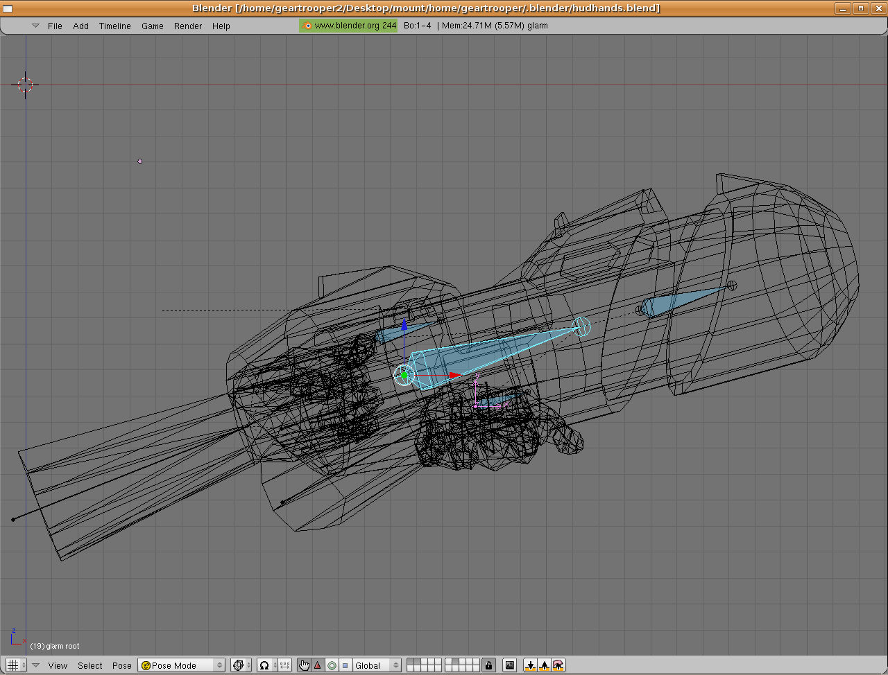
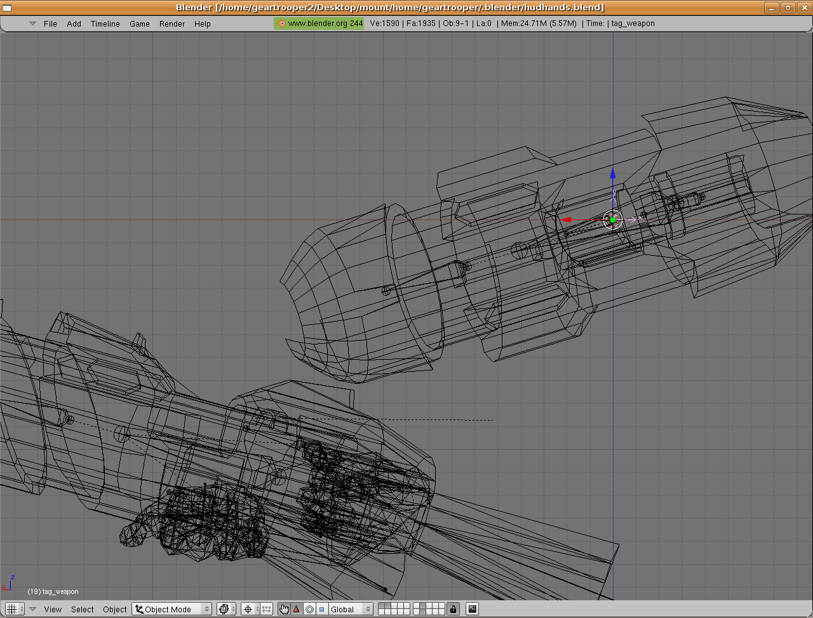
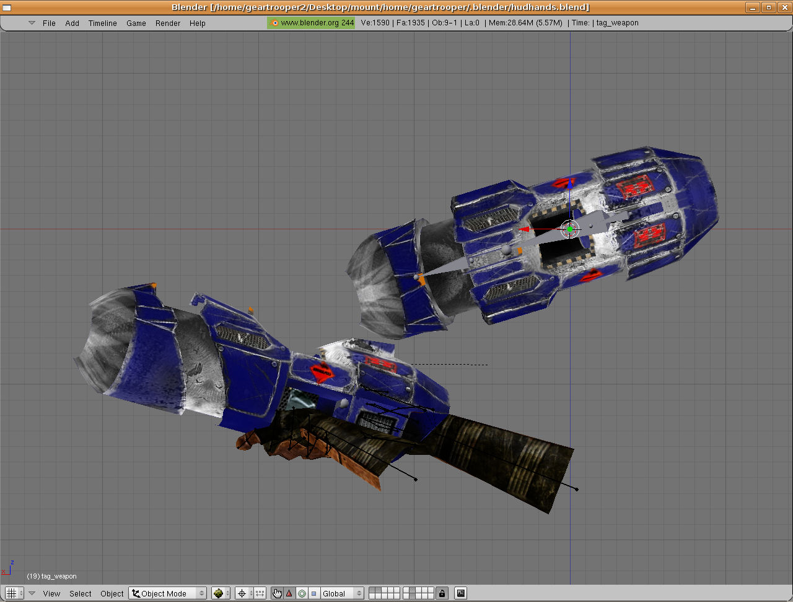
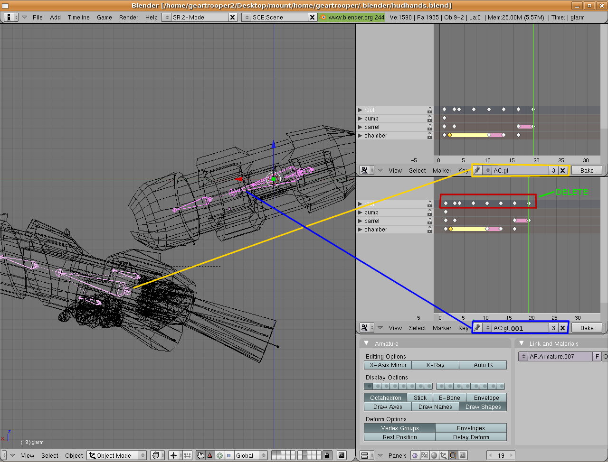

Proceed with animating the hands and weapon being sure to keep the animations separate for the hands and weapon in the action editor. You may find it easier to animate the action of the weapon such as reloading and firing before aligning it to the hand postion.
Now that you have animated the hands moving and the weapon firing in unison its time for another step. Switch to rear view [shift-keypad 1]. We must duplicate the weapon, its armature, and its empty and align the empty to 0,0,0 will retaining its position relative to the duplicate weapon and its armature like so;

The duplicate weapon appears oriented incorrectly in relation to the original. This is because after you align the empty to 0,0,0 you must snap the cursor to center [shift-c], set the pivot point to cursor[.], select only the duplicate armature and weapon(not the empty) and rotate them on the X axis with [r, x, 90, -]. Otherwise the weapon will show up dissoriented in Sauerbraten. The hands and weapons should now appear as so in rear view;

Now we must assign a new animation based off the first weapon to the duplicate weapon. The reasoning for this is to keep the basic actions but remove any movement of the duplicate weapon as a whole from its empty. Open two action editors and in one select the original weapon's armature and corresponding action. For the sake of simplicity lets say we named it 'AC:gl". Add a copy of this action by going into the action editor's select arrows and choosing "ADD NEW". Voila. You now have 'ACgl.001'. Change the action back to 'AC:gl' for this armature. Select the duplicate weapon's armature and set the action to 'AC:gl.001'. Select all the keys for the root bone and delete them preserving all other action keys like so;

You should now have a weapon that performs exactly as the original but without straying from its empty.
The next step is to ensure our empties are on the proper axis before exporting. Select the empty parented to the hands. Snap the cursor to it and ensure you are in the crosshairs pivot mode[.]. Ensure that the empty's X axis is aligned to Blender's X axis, the empty's Y axis is aligned to Blender's Z axis, and the empty's Z axis is aligned to Blender's Y axis as on the next page;
Next Page;